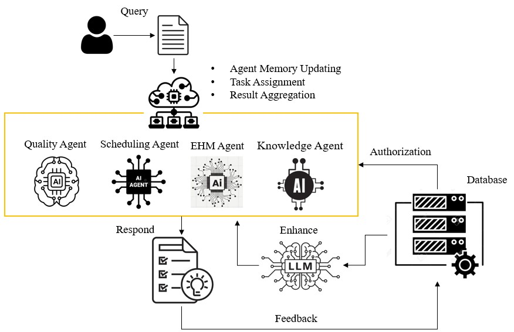

精選論文Featured Publications
{{ p.title }}
{{ p.authorLine }}
{{ p.venue }}
以 AI Agent 與數位雙生為核心，打造自主決策與人機協作的閉環智慧製造。
Closed-loop smart manufacturing built on AI agents and digital twins, for autonomous decisions and human–AI collaboration.
{{ s.descZh }}
{{ s.descEn }}
{{ p.authorLine }}
{{ p.venue }}
本實驗室以智慧製造中的分析、最佳化與決策支援為研究主軸，涵蓋設備健康監測與預測性維護、排程與系統最佳化，以及運用深度學習進行影像辨識與瑕疵檢測。近期研究進一步結合大型語言模型、知識圖譜與檢索增強生成，探討如何將製造領域知識融入瑕疵分析與決策支援。
Our research focuses on analytics, optimization, and decision support for smart manufacturing. Topics include equipment health monitoring and predictive maintenance, scheduling and system optimization, and deep learning for image recognition and defect detection. Recent work also combines large language models, knowledge graphs, and retrieval-augmented generation to explore how manufacturing knowledge can support defect analysis and decision-making.
{{ c.titleEn }}
彙整實驗室的論文、研究計畫與產學／學術合作。可用類型選單篩選，或透過論文關聯圖探索共享的研究方法、主題與技術。
Explore our publications, research projects, and industry–academia and academic collaborations. Filter by type, or use the publication graph to explore shared research fields.
{{ p.authorLine }}
{{ p.venue }}
鄧志峰博士現任國立臺灣科技大學智慧製造科技研究所副教授，獲國立交通大學工業工程與管理博士學位。研究結合工業工程與人工智慧，涵蓋排程最佳化、設備健康監測、深度學習與瑕疵檢測，近期並延伸至大型語言模型與知識圖譜輔助的製造決策。曾任台灣積體電路製造主任工程師及戴樂格半導體 Principal IT Applications Architect，具半導體製造資訊系統與巨量資料分析經驗。
Dr. Jr-Fong Dang is an Associate Professor at the Institute of Intelligent Manufacturing Technology, National Taiwan University of Science and Technology. He holds a Ph.D. in Industrial Engineering and Management from National Chiao Tung University. His research brings together industrial engineering and AI, spanning scheduling optimization, equipment health monitoring, deep learning, and defect detection, and more recently language-model and knowledge-graph support for manufacturing decisions. He previously worked as a Principal Engineer at TSMC and a Principal IT Applications Architect at Dialog Semiconductor, with experience in semiconductor manufacturing information systems and big-data analytics.
研究主題包括以最佳化方法支援排程與派工、運用深度學習進行設備健康監測與影像瑕疵辨識，以及將專家知識融入分析模型。近期研究計畫進一步探索生成式 AI、多代理協作、神經符號 AI 與動態知識圖譜在工業決策支援中的應用。
Research topics include optimization for scheduling and dispatching, deep learning for equipment health monitoring and visual defect detection, and the integration of expert knowledge into analytical models. Recent projects explore generative AI, multi-agent collaboration, neuro-symbolic AI, and dynamic knowledge graphs for industrial decision support.

{{ p.authorLine }}
{{ p.venue }}
團隊研究涵蓋影像辨識、機器學習、深度學習與智慧製造，部分研究亦延伸至 AI Agent、網頁開發及資料庫管理。
The team works across image recognition, machine learning, deep learning, and smart manufacturing, with some projects also involving AI agents, web development, and database management.
此學年尚無成員。No members for this class year yet.

無論是研究合作、產學交流，或是想加入實驗室，歡迎與我們聯繫。
Whether it is research collaboration, industry partnership, or joining the lab, feel free to reach out.
235307 新北市中和區工專路111號 臺灣科技大學 華夏校區教學大樓 2 樓 C219
General Education Building 2F C219, No. 111, Gongzhuan Rd., Zhonghe Dist., New Taipei City 235307, Taiwan